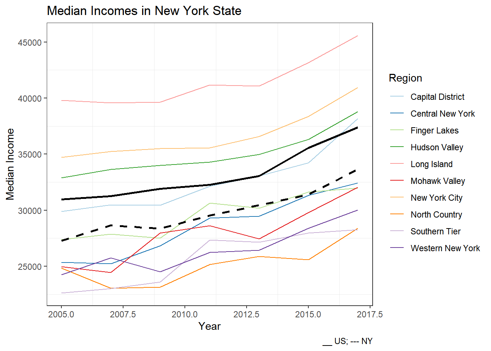

A Regionalized SUNY Impact Assessment
Moira O’Neill
11/7/2019
Introduction
The State University of New York (SUNY) is one of the largest public higher education systems in the country, with 64 total institutions spread across 10 state regions. These regions are highly varied, and include a megacity, the rural periphery, and several old industrial cities experiencing population loss. The institutions are varied too, and include research universities, comprehensive colleges, community colleges, and technical institutes.
SUNY’s heterogeneous geographic and institutional structure is designed to facilitate access and cultivate human capital at several degree levels. This is explicit in SUNY’s stated mission: to recognize the “fundamental role of its responsibilities in undergraduate education and [to provide] a full range of graduate and professional education that reflects the opportunity for individual choice and the needs of society” (suny.edu).
How well does the SUNY system fulfill this mission at the regional and state scales? The following study offers a preliminary assessment of SUNY’s role in attracting, forming, and retaining human capital in different parts of the state. A conclusion section highlights the strengths of the system as well as several opportunities for improvement.
library(readr)
library(ggplot2)
library(dplyr)
library(tidyverse)
library(RColorBrewer)
library(tidycensus)
library(readr)
library(knitr)
library(kableExtra)
library(latex2exp)
library(egg)
library(gridExtra)
library(lattice)
library(spData)
library(sf)
library(tidyverse)
library(tigris)
library(rgdal)
library(sp)
library(rgeos)
library(ggmap)
library(plotly)
census_api_key("7912510ff91a51de560cf1e9160860875f062880")#load new york counties from tigris
ny <- counties("NY")
ny <- counties("NY", cb = TRUE, resolution = "5m")
#load regions and school locations
regions <- read_csv("Census_geography.csv")
#join region attribute with spatial data
ny_regions <- merge(ny, regions, by.x = "NAME", by.y = "County")
class(ny_regions)
#convert sp to sf
ny_regions <- st_as_sf(ny_regions)
#dissolve county borders
ny_regions_dissolved <-
ny_regions %>%
group_by(Region) %>%
summarise(status = 'dissolved')
plot(ny_regions_dissolved)#load school locations
schools <- read_csv("SUNY_locations_and_student_counts.csv")
#join school locations to ny regions
schools2 <- merge(ny_regions_dissolved, schools, by = "Region")
#plot regions on map
ggplot() +
geom_sf(ny_regions_dissolved, mapping = aes(fill = Region))+
scale_fill_brewer(palette = "Paired")+
geom_point(data = schools, mapping = aes(x= lon, y = lat, shape = Level))+
ggtitle("SUNY Institutional Distribution by Region")+
theme_bw()+
theme(axis.title.x = element_blank(),
axis.title.y = element_blank()
)
Methods and Materials
This project uses data compiled from the Census Tigris package, US Census American Community survey, the Rockefeller Center, and the SUNY gradwages dashboard. I use a series of line and bar graphs with reference lines to visually convey the different roles the SUNY system plays within each region. I also compile several tables to organize information about median wages and destination by degree level and field of study.
Part I. Enrollment
The majority of SUNY students attend college within their own region. The two exceptions are New York City, which draws the most out-of-state students, and Southern Tier, which is home to Cornell University and attracts the largest number of international students.
#load student origin data
origins <- read_csv("suny_student_origins.csv")
#build stacked bar plot
ggplot(origins, aes(x = Region, y = Value,
fill = Key))+
geom_col(position = position_stack(reverse = FALSE))+
scale_fill_brewer(palette = "Paired")+
theme_bw()+
theme(axis.text.x = element_text(angle = 90,
hjust = 1),
axis.text = element_text(size = 7),
legend.text = element_text(size = 7),
legend.title = element_blank(),
axis.title.x = element_blank(),
axis.title.y = element_text(size = 7),
axis.ticks = element_blank(),
plot.caption = element_text(size = 6)
)+
labs(title = "SUNY Student Origins by Region",
y = "Percent of Total Students",
caption = "Data: Rockefeller Center"
)Part II. How important are SUNY graduates to each region’s workforce?
The relative importance of SUNY alumni - and regional schools - to sub-state labor markets varies widely. For example, SUNY graduates make up a dispropotionate part of total graduates in rural parts of the state like Mohawk Valley and North Country.
Despite making up a smaller share of total graduates in the Capital District, SUNY graduates are about 35% of the total workforce there (which is highly educated on the whole).
SUNY graduates in New York City were mostly educated outside of the region. The opposite is true of Western New York; of the more than 60% of area graduates that are SUNY alums, about 55% were educated at regional schools.
#load grad retention data
grad_retention <- read_csv("grad_retention_percent_ttl_grads.csv")
#plot grad retention total graduates
ggplot(grad_retention, aes(x = Region, y = Value,
fill = Key))+
geom_col(position = position_stack(reverse = FALSE))+
scale_fill_brewer(palette = "Paired")+
theme_bw()+
theme(axis.text.x = element_text(angle = 90,
hjust = 1),
axis.text = element_text(size = 7),
legend.text = element_text(size = 7),
legend.title = element_blank(),
axis.title.x = element_blank(),
axis.title.y = element_text(size = 7),
axis.ticks = element_blank(),
plot.caption = element_text(size = 6),
legend.key.size = unit(0.4, "cm")
)+
labs(title = "SUNY Alums as a Percent of Graduates in Region",
y = "Percent of Total Graduates",
caption = "Data: Rockefeller Center")
#load workforce grad retention data
grad_retention <- read_csv("grad_retention_percent_ttl_workforce.csv")
#build stacked bar plot
ggplot(grad_retention, aes(x = Region, y = Value,
fill = Key))+
geom_col(position = position_stack(reverse = FALSE))+
scale_fill_brewer(palette = "Paired")+
theme_bw()+
theme(axis.text.x = element_text(angle = 90,
hjust = 1),
axis.text = element_text(size = 7),
legend.text = element_text(size = 7),
legend.title = element_blank(),
axis.title.x = element_blank(),
axis.title.y = element_text(size = 7),
axis.ticks = element_blank(),
plot.caption = element_text(size = 6),
legend.key.size = unit(0.4, "cm")
)+
labs(title = "SUNY Alums as a Percent of Regional Workforce",
y = "Percent of Total Workforce",
caption = "Data: Rockefeller Center")
The level of educational attainment matters, too. Graduates of technical, community, and comprehensive colleges are all more likely than research university graduates to remain in New York state 10 years after graduation.
#load wage data
wages <- read_csv("SUNY_locations_enrollment_wages.csv")
ggplot(wages, aes(x = Wages, y = Residents, col = Level))+
geom_point()+
scale_fill_brewer(palette = "Paired")+
theme_bw()+
ggtitle("Graduate Wages and New York Residency after 10 Years")+
labs(x = "Wages 10 Years After Graduating", y = "% Graduates Living in New York After 10 Years") Of course, there is likely significant selection bias at work here, as students who prefer to remain close to home may opt to attend smaller local schools. However, rather than diminish SUNY’s role, such cases demonstrate the importance of providing a range of localized options to meet geographically isolated students’ needs. Higher wage premiums (versus national median wages) at all levels of education reinforce the benefits of access.
Of course, there is likely significant selection bias at work here, as students who prefer to remain close to home may opt to attend smaller local schools. However, rather than diminish SUNY’s role, such cases demonstrate the importance of providing a range of localized options to meet geographically isolated students’ needs. Higher wage premiums (versus national median wages) at all levels of education reinforce the benefits of access.
#call wage data
ggplot(schools, aes(x = Wage_premium, fill = Level))+
geom_density(alpha = 0.5, color = F)+
labs(x = "Wage Premium %", y = "Density")+
theme_bw()+
scale_fill_brewer(palette = "Paired")
Part III. How well do skills of local SUNY graduates match regional labor market needs?
An important dimension of any public university’s impact is whether the skills of their graduates match demand. By comparing the types degrees held by alums as a percent of total regional jobs requiring a related degree (this data comes from the NY Department of Labor via the Rockefeller Center) to SUNY alums as a percent of total regional graduates (the dashed reference line), the series of bar plots below depict this skills (mis)match.
Overall, there is an impressive consistency between SUNY graduates’ skills and regional labor market demand. But there are some notable mismatches. In all cases, there is an oversupply of agricultural and art degrees. The largest and most consistent undersupply is in hospitality. Mohawk Valley, Long Island, and Western New York appear to have the least perfect relationship between skills supplied and skills demanded.
Because of how significant alums are to Mohawk Valley’s labor pool, the skills mismatch in business, healthcare, education, law and public service, and social services is likely constraining economic growth in this region most dramatically.
#load Skills Match Data from CSV file
skills <- read_csv("suny_skills_match_by_region.csv")
#build faceted bar graphs w ref lines
ggplot(skills) +
geom_col(aes(x = Field , y = Degrees, fill = Field),
position = "dodge")+
scale_fill_brewer(palette = "Paired")+
labs(x = "Field",
y = "SUNY Degrees as a % of Jobs Requiring One",
caption = "--- SUNY graduates as a proportion of total regional graduates")+
theme_bw()+
theme(axis.text.x = element_blank(),
axis.ticks.x = element_blank()
)+
geom_hline(aes(yintercept = Percent),
col = "Black", linetype = "dashed")+
facet_wrap(~Region)+
theme(legend.position = "bottom",
legend.box = "horizontal",
legend.text = element_text(size = 8),
legend.key.size = unit(0.4, "cm"),
legend.title = element_blank(),
plot.caption = element_text(size = 7),
axis.title.x = element_text(size = 10),
axis.title.y = element_text(size = 10)
)+
ggtitle("Matching SUNY Graduates' Skills to Area Labor Markets")
Part IV. Regional Education Attainment and Income
There is abundant evidence that the social returns to education exceed the private returns, as higher educational attainment rates lead to productivity and wage gains for the entire workforce (Moretti 2004, 2012).
Between 2005 and 2017, New York State’s median educational attainment and income rates have consistently exceeded national rates. But there is some variation within the state.
[MORE HERE]
regional_ed <- read_csv("suny_regional_education_tidy.csv")
#isolate NY and USA
NY <- regional_ed %>%
filter(Region == "NY State")
USA <- regional_ed %>%
filter(Region == "USA")
regional_ed1 <- regional_ed %>%
filter(Region != "NY State") %>%
filter(Region != "USA")
#plot education rates in each region
plot <- ggplot(data = regional_ed1,
aes(x = Year,
y = bach_or_higher,
col = Region))+ geom_line()+
scale_color_brewer(palette = "Paired")
plot + geom_line(data = NY,
aes(x = Year, y = bach_or_higher),
col = "Black", size = 1)+
geom_line(data = USA,
aes(x = Year, y = bach_or_higher),
col = "Black", linetype = "dashed", size = 1)+
theme(panel.grid.major = element_blank())+
labs(x = "Year",
y = "% Population with Bachelor's or Higher",
title = "Educational Attainment in New York State",
caption = "Data compiled from US Census 5-year ACS Estimates"
)
#load income data from .csv file
regional_income <- read_csv("suny_regional_income_data_tidy.csv")
#View data
View(regional_income)
colnames(regional_income)
#isolate NY and USA
NY <- regional_income %>%
filter(Region == "NY State")
USA <- regional_income%>%
filter(Region == "USA")
regional_income1 <- regional_income %>%
filter(Region != "NY State") %>%
filter(Region != "USA")
#build line graphs by year, with NY and USA as reference lines
base_plot <- ggplot(data = regional_income1,
aes(x = Year, y = Income, col = Region))+
geom_line()
#add NY State and USA as reference lines
base_plot +
geom_line(data = NY,
aes(x = Year, y = Income),
col= "Black", size = 1)+
scale_color_brewer(palette = "Paired")+
geom_line(data = USA,
aes(x = Year, y = Income),
col = "Black", linetype="dashed", size = 1)+
theme(panel.grid.major = element_blank())+
labs(x = "Year",
y = "Median Income",
title = "Median Incomes in New York State",
caption = "Data compiled from U.S. 5-year ACS Estimates"
)
Conclusion
The SUNY system’s ability to attract, shape, and retain human capital varies between regions.
The system facilitates resident access through the strategic placement of the institutions themselves, and by offering a range of programs of study at various levels of depth.
[MORE HERE]